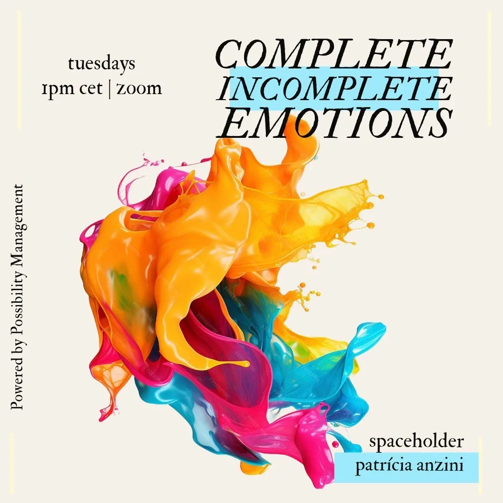

Complete Incomplete Emotions on Strikingly
-
StartOver.xyz
-
Running Through Life
with incomplete communications.
Those things
You are running through life with an amazing amount of incomplete communications in our bodies. And those incomplete communications are big. They mostly show up in our 5 body system as incomplete mixed or unmixed emotions. Those incomplete emotions are silents things. They have a true thingyness about them. They are things that we carry around, like burdens on our shoulders or chains on our feet. They locking you to the ground, when really you are design to fly. They eat up your energy and attention when those could be directed to deliver our Destiny. They can even be the source of diseases or physical pains.
Counting Enemies
If you carry incomplete communication, you count your enemies in the morning and you have a good reason to live. You have secret conversations in your head where you prove to them that you are right and they are wrong, that they really hurt you, abandoned you, betrayed you. Your life becomes about proving yourself right, or proving them wrong. Your life because a giant revenge battlefield. Your revenge moves might be so subtle that you don't notice them as such. However, results don't lie. Some people spent their life mission taking revenge on their parents to prove to the world that their parents were bad parents. It is expensive to take on such a life mission without having a choice. By completing incomplete communication, you gain your capacity of choice back.
-
Completing Incomplete Emotions- The Healing Process
As mentioned above, the healing process for incomplete communication is called Completing Incomplete Emotions.You use your emotions - either in their pure or in their mixed form - as gateway to the incomplete communications. Here, you will find the steps and descriptions of how to go through this healing process.Below in the experiments you will find hints about how, where and when to provide this healing process for yourself and for others.
MAKE TIME SPACE.
Make time for yourself to do this process. About 20 minutes for each person. It is not recommendable to complete more than 3 or 4 incomplete communications at one given time.
The point is not to complete every incomplete communications that you had in your life. For starters, it is impossible to be completely rid of incomplete communications. Even people who have been doing 20+ years of transformation and healing, still carry in them their next layer of incomplete communications. And secondly, your nervous system and your matrix can only hold so much transformation at one given time. Transformation has a speed limit.
Regularly making space and time to complete the 3 or 4 incomplete communications bubbling at the surface is a much more sustainable practice.
FIND A PARTNER
Like most healing processes, you cannot do this one alone. Like Werner Erhard said "Healing happens in public". It doesn't have to be a big public, one person is enough.
Find one person who is willing to hold space for you during this process. You can tell them that there job will be to take on the role of someone whom with you have an incomplete communication and repeat back what they heard you say. You can also offer them the possibility to experience the relief and relaxation that comes with completing an incomplete emotion.
If both partners decide to go through this healing process, then simply follow the instruction below and go back and forth between you two. One person starts and the other holds space. Then change role, the first person becomes the space holder and the second person completes their incomplete emotion.
SCAN IN YOUR LIFE FOR AN EMOTIONAL KNOT
The person who decides to go first would then close their eyes and scan in their four bodies for an emotional knot - it can show up as a physical tension, a story in your head, a block in your energetic body or an emotion in your emotional body.
There could be a lot of impulses coming up. Simply pick one. The first one or the biggest one.
Let the sensation of it get bigger.
At some point, you might get an image or a memory popping up of an interaction with somebody.
Then, tell you partner who they are role playing by saying for example: "You are my second grade teacher, Ms. Rosaly", or "You are my uncle, Christian", or "You are my childhood best friend, Kate." Whoever you need to complete this incomplete emotions.
Your partner spin around on themselves and take on the energy of that person to become them. After their spin, your partner says : "I am (such or such)."
LET THE SENSATION GET BIGGER
Let the sensation get bigger.
Let the emotions come back into your body.
Then look at the person across from you and say:
"I feel (mad/sad/glad/scared) because ..."
Be very clear and specific about what you are angry/sad/scared/glad about that you couldn't tell them back then.
As much as possible, make short sentences containing only emotion at a time.
And feel the emotion while you are saying it. It is very important to feel the emotion and not just talk about it. Talking about it will not complete the communication. The completion doesn't only happen in your mind, but in all four bodies.
Keep saying what you are angry/sad/scared/glad about until you come to the end of the first 'layer'.
IF NEEDED, UNMIX YOUR EMOTIONS INTO PURE FORM
If you notice that you are mixing two or more emotions together, like for example, sadness and anger, unmix them into their pure form.
(Explanation for how to unmix emotions can be found here at the Unmix Emotions Bubble.)
The unmixing of emotions doesn't have to be done all the way. Unmixing the first layers might be as far as you or your partner can go.
COMPLETION LOOPS
When you have come to the end of the first layer of the incomplete communication, pause.
Your partner who is role-playing this person whom who had an incomplete communication with will speak now.
The job of the role-player is to complete the communication through completion loops.
When doing completion loops, the role-player only repeat back what they heard you say without a spin, a story or a special tone of voice.
The role-player does not need to repeat every sentence they've heard word-for-word.
There job is to repeat the essentials of the communication that was not said previously.
Extra: it can happen that the person role-playing might get some inside information from the person they are role-playing, about why they acted like that or said that back then. It is up to the role-player to decide whether they share this information during the process. These kind of information can be transformational. AND this process is not to fall into a discussion.
GO TO THE NEXT LAYER, WRAP UP
After the first layer of communication is completed, you will experience a sense of relief.
Then either:
1. There is another layer to the communication that you need to complete. Go back to step 4.
2. The communication is complete. Simply say 'Thank you'. Have your partner spin on themselves to leave their role and come back to themselves.
One Completing Incomplete Emotion Process takes between 5 and 10minutes per communication. No longer.
IMPORTANT: if it seems like the communication is not been completed despite completion loop, it is possible that the source of the knot is deeper and bigger. In this case, Completing Incomplete Emotions is not the correct healing tool. Recommend to this person to bring this knot themselves to a Possibility Coaching, an Expand The Box Training, a Possibility Lab. Have them choose another incomplete communication to do with you right now.
GO BACK AND FORTH
When the first person has completed their first incomplete communication, then the second person gets a chance to do that starting all the way from Step 3.
Go back and forth like this for about 30-40min or 3 incomplete communications per person.
MATRIX POINTS
COMPLETE.01: First Completing Incomplete Emotion
COMPLETE.02: Second Completing Incomplete Emotion
COMPLETE.03: Third Completing Incomplete Emotion
-

Patricía Anzini holds regular spaces to complete Incomplete Emotions on Mondays for one hour.
Have you 5 bodies ready to get rid of old baggage and get your authority back!
This is a free healing space to practice and everyone is welcome to join. We go through this process as a team.